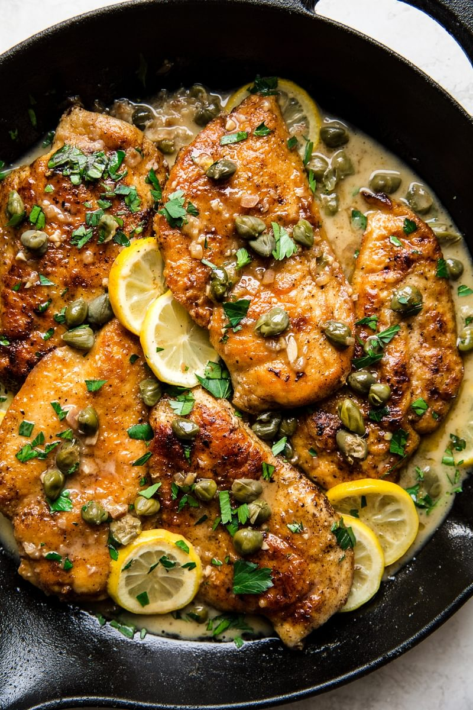
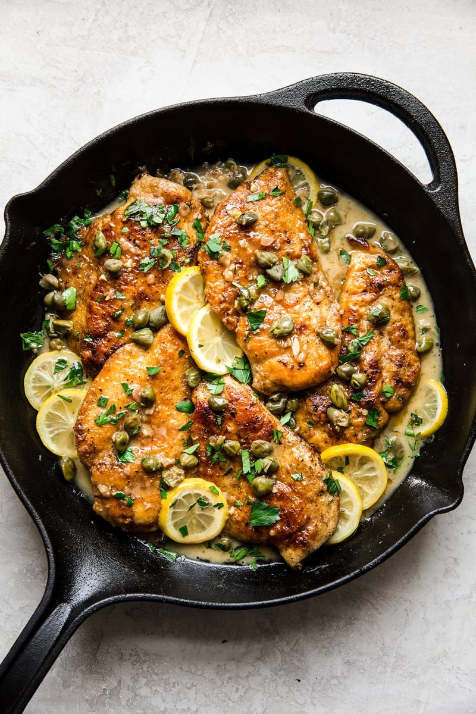

Chicken Piccata

Lemony, caper-topped, and just buttery enough,
chicken piccata is an simple weeknight meal that’s easy to love,
and so very fast—just ten minutes from sauté pan to table.
Ingredients:
- Bonesless, skinless chicken breasts
- Salt & Pepper
- Flour for dredging
- Butter
- Olive oil
- Shallots
- Garlic
- Lemons
- Capers
How to Make Chicken Piccata
Part :1 The Pan-Fry
- Slice the chicken breasts horizontally—you’ll need a
sharp knife for this, obviously! The reason you cut
the chicken breast into thin pieces is so that they
can cook evenly during the pan-frying process.
Thin pieces of chicken mean that when the outside is
crispy and perfectly brown,
the chicken will be cooked through. Magic!
-
Dredge! Season the chicken breast pieces,
and then give them a nice coating of flour.
For whatever reason, kids really love to help
out with this step. If they’re old enough to
know to be careful with raw poultry,
go ahead and outsource this step to them!
-
Fry! Fry the chicken cutlets in a
combination of olive oil and butter.
The oil—use regular light olive oil,
not extra virgin—helps prevent the butter
from burning, plus,
we love the flavor of both!

How to Make Chicken Piccata Part 2: The Piccata Sauce
Our piccata sauce is simply a pan sauce,
which means that we use the good crispy,
chicken-tinged buttery bits that are left in
the skillet after frying the chicken cutlets to make a sauce.
Here’s how to make this lemony piccata sauce:
- Sauté shallots and garlic in the pan drippings—i.e.
the leftover oil and butter.
- Add stock! Simmer for a few minutes to reduce it.
- Stir in more butter, plus the requisite capers and lemon juice.
- Season with a little salt and pepper.
- That's it! You made a pan sauce!